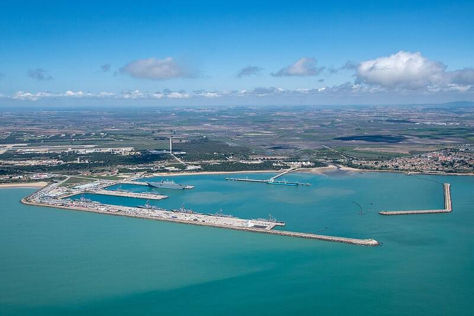

Naval Station Rota Spain Spain · Military base · 36.645°N, 6.350°W Naval Station Rota from the air, 2022. Photo: U.S. Navy, Public domain (source) A U.S. Navy base on Spain's Atlantic coast. 1 Open in the interactive Watcher Sources Naval Station Rota Wikipedia